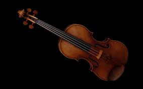

An Introduction to the Violin
The violin is a four-stringed instrument, traditionally tuned to the notes G, D, A, and E. Each string produces a distinct range of tones, allowing the violin to cover both high and low registers with remarkable versatility. Musicians use a bow made of horsehair to draw sound from the strings, though plucking (pizzicato) is also common. Because of its expressive sound and wide range, the violin plays a central role in classical music, orchestras, and even modern genres like jazz and folk.
